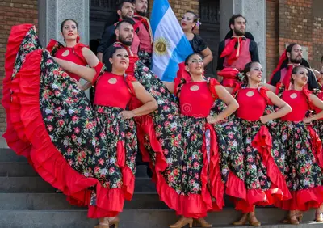
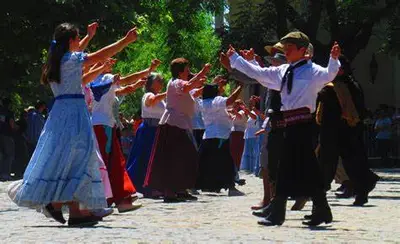

History and Traditions
Explore the historical background and traditional customs of Argentina.
Historical Background
Argentina's history is rich and diverse, from the indigenous cultures that originally inhabited the land to the Spanish colonization and beyond.
Traditional Customs
Discover the unique traditions that are still practiced in Argentina today, including music, dance, and celebrations.
Cultural Celebrations
Argentina is known for its vibrant cultural celebrations, including national holidays and local festivals that bring communities together.